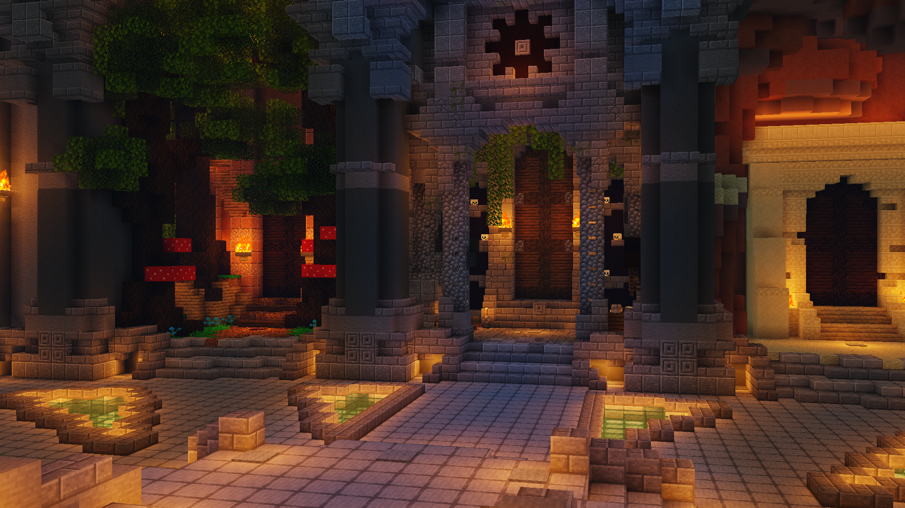
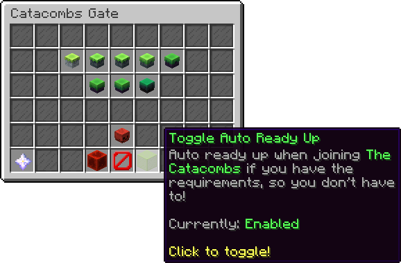
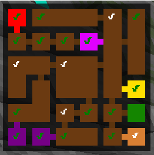
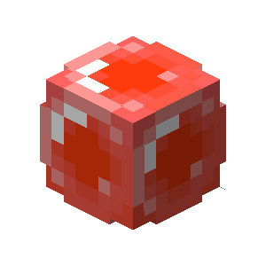
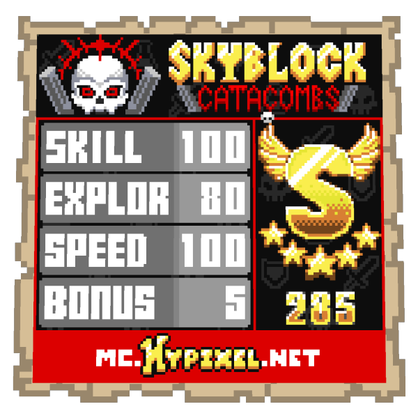
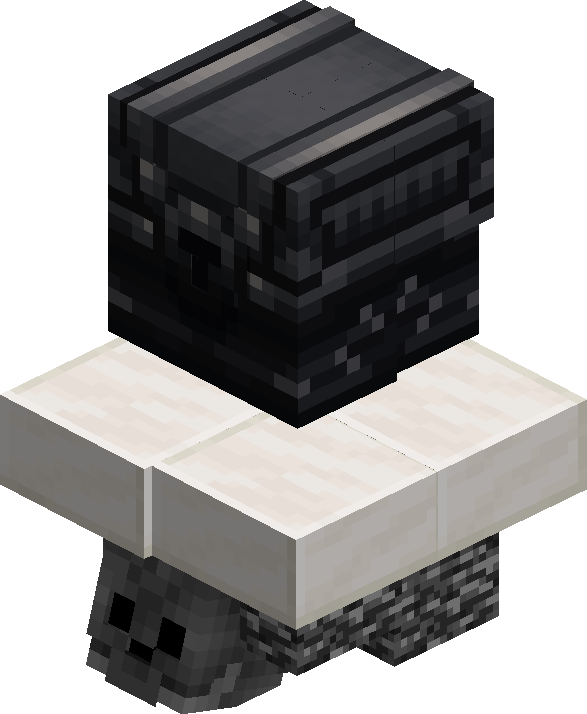
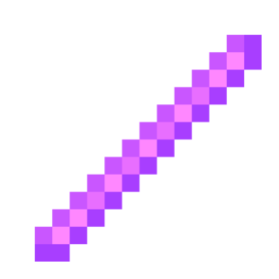

Photo Gallery of Hypixel Skyblock's Dungeons
By Shray K.
please subscribe!
THE IMAGES!

This is the Dungeon Hub! You can enter through a portal to this place, and then enter the dungeons!

This is the menu you get after clicking on an NPC.
The green things in the middle start from left to right, up to down in numerical order
this makes it Dungeon 1, 2, 3, 4, 5, 6, 7! each with increasing difficultly of bosses, and getting to the boss!
also, if the first 7 are too easy, there is master mode which drastically increases the health of EVERYTHING (1000x)

This is a map of what the dungeons are inside of them, as you may remember by the color coding:
puzzle=purple,mini-bosses=yellow,trap=orange,normal=brown, and 2 other rooms are the green room which is where you start, and the pink, which is a fairy room to revive players that die inside of the dungeon
(though dying loses you 2 score, making 300 score unattainable after 4 deaths)
also the check marks indicacte how 'done' you are with a room:
- NO CHECK MARK: The main mobs are NOT dead!
- WHITE CHECK MARK: The main mobs are dead, but you don't have all the secrets found in that room!
- GREEN CHECK MARK: The main mobs are dead, and all secrets have been found in that room!
slightly different for trap room, blood room, and puzzle rooms - you only need to find the secrets/complete the puzzle/kill all the blood room mobs

This is a BLESSING.
You get blessings from opening the secret chests scatered across the dungeon, and killing all the main mobs in a room. These give you more damage, speed, defense, and mana, buffing your stats by a substantial amount.

This is the score sheet you get at the end of the dungeon!
If you get 100 skill (no deaths), 100 explore (rooms cleared with green check marks) and dont go overtime (speed) you get 300 score (plus 5 as a buffer from killing special mobs)

This is the FINAL chest you get after completing the dungeon clearing phase, secrets, and boss fight, and getting a good enough score of 300 (nearly perfect gameplay), containing (based on what dungeon floor you do) the best loot in the ENTIRE GAME!

This is a stick.
To understand its importance as a rare drop from the final chest (0.1~%)
We need to see how much 1 USD is in Skyblock currency - coins - which is about 6.4 million coins (not that much, but not that little)
This stick costs 1 BILLION coins
Or 156 USD (some people have got 100s)
In a block game.